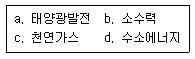
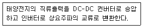
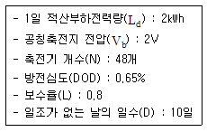
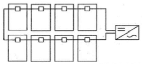
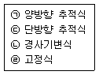
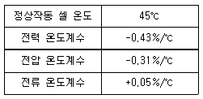
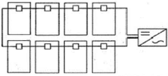
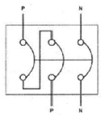
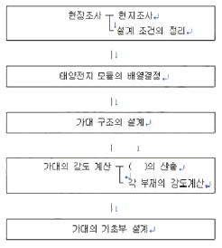
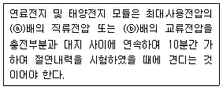

신재생에너지발전설비기사(구) (2016-10-01 기출문제)
1과목: 임의 구분
1. 일사강도 0.8㎾/m2, 결정계 태양전지의 모듈면적 1.0m2, 셀 온도 65℃, 변환요율이 15%인 경우 출력은 약 몇 ㎾ 인가? (단, 결정계 셀 온도 보정계수:(Pmax)는 -0.4%/℃이다.)
- 0.1
- 0.2
- 0.3
- 0.4
(정답률: 55%)

2. 다음의 보기 중 우리나라에서 신재생에너지로 분류되는 에너지를 모두 고른 것은?

- a, b
- a, b, d
- a, c, d
- a, b, c, d
(정답률: 73%)
3. 결정질 실리콘 태양전지의 일반적인 제조공정이 아닌 것은?
- 웨이퍼 장착
- 표면 조직화
- 측면 접합
- 반사방지막 코팅
(정답률: 69%)
4. 다음은 인버터의 어떤 회로방식에 대한 설명인가?

- 트랜스리스 방식
- DC-DC 컨버터 방식
- 고주파 변압기 절연방식
- 상용주파 변압기 절연방식
(정답률: 74%)
5. 태양전지 모듈의 Ⅰ-Ⅴ 특성곡성에서 일사량에 따라 가장 많이 변화하는 것은?
- 전압
- 전류
- 온도
- 저항
(정답률: 73%)
6. 여러 태양전지에 대한 설명으로 틀린 것은?
- GIGS 태양전지는 빛의 흡수율이 높아 박막형 태양전지로 제조된다.
- 유기반도체 태양전지는 제작이 용이하고 생산비용이 낮다.
- 비정질 실리콘 태양전지는 초기 광열화 문제로 인해 성능저하가 발생한다.
- 염료감응형 태양전지는 효율은 낮지만 장기 신뢰성이 우수하다.
(정답률: 63%)
7. 태양전지 모듈에 다른 태양전지 회로나 축전지의 전류가 유입되는 것을 방지하기 위하여 설치하는 것은?
- ZNR
- SPD
- 바이패스 소자
- 역류방지 소자
(정답률: 88%)
8. 태양전지 모듈검사는 출하검사와 신뢰성검사로 구분된다. 다음 중 출하검사에 들어가지 않는 것은?
- 특성검사
- 내습성검사
- 절연저항시험
- 구조 및 조립시험
(정답률: 52%)
9. 태양광발전시스템의 분류 중 전력회사 배전선에서 멀리 떨어진 산악지대 및 외딴 섬 등에서 사용하는 방식은?
- 계통연계형 시스템
- 독립형 시스템
- 추적형 시스템
- 연동형 시스템
(정답률: 91%)
10. 태양전지의 충진율(Fill Factor, FF)에 대한 설명으로 틀린 것은?
- 충진율이 낮을수록 태양전지의 성능품질이 좋음을 나타낸다.
- 충진율은 개방전압(Voc)과 단락전류(ISC)의 곱에 대한 최대출력의 비로 정의된다.
- 충진율은 태양전지의 특성을 표시하는 파라메타로서 내부 직렬저항 및 병렬저항으로부터의 영향을 받는다.
- 충진율은 최적 동작전류(Im)와 최적 동작전압(Vm)이 단락전류(ISC)와 개방전압((Voc)에 가까운 정도를 나타낸다.
(정답률: 83%)
11. 신재생에너지에 대한 설명으로 틀린 것은?
- 바이오에너지는 생물자원을 변환시켜 이용하는 것이다.
- 파력발전은 표층과 심층의 해수 온도차를 이용한 것이다.
- 조력발전은 밀물과 썰물로 발생하는 조류를 이용한 것이다.
- 폐기물에너지는 가연성폐기물에서 발생되는 발열량을 이용한 것이다.
(정답률: 88%)
12. 태양전지의 직류 출력을 상용주파수의 교류로 변환한 후 변압기에서 절연하는 방식은?
- PAM 방식
- 트랜스리스 방식
- 고주파 변압기 절연방식
- 상용주파 변압기 절연방식
(정답률: 91%)
13. 독립형 태양광발전시스템용 축전지를 설계하고자 한다. 축전지 용량 C(Ah)는?

- 300.64
- 400.64
- 500.64
- 600.64
(정답률: 78%)
14. 스마트 그리드(smart grid)에 대한 설명으로 틀린 것은?
- 분산전원 전원공급방식이다.
- 네트워크 구조이다.
- 단방향 통신방식이다.
- 디지털 기술기반이다.
(정답률: 88%)
15. 낙뢰에 의한 충격성 과전압에 대하여 전기설비의 단자 전압을 규정치 이내로 저감시켜 정전을 일으키지 않고 원상태로 회귀하는 장치는?
- 내뢰 트랜스
- 어레스터
- 서지업서버
- 역류방지 다이오드
(정답률: 67%)
16. 태양전지의 변환효율에 대한 설명으로 틀린 것은?

- 태양전지의 성능을 타나내는 파라미터이다.
- 태양광 스펙트럼이나 세기, 전지의 온도에 영향을 받는다.
- 태양으로부터 입사된 에너지에 대한 출력 전기 에너지의 비로 정의된다.
- 지상에서 사용되는 태양전지의 효율은 모듈온도 25℃, AM 1.0조건에서 측정된다.
(정답률: 79%)
17. 10A의 전류를 흘렸을 때의 전력이 50W인 저항에 20A의 전류를 흘렸다면 소비전력은 몇 W인가?
- 50
- 100
- 150
- 200
(정답률: 63%)
18. 밴드갭 에너지는 반도체의 특성을 구분하는 매우 중요한 요소이다. Si, GaAs, Ge를 밴드갭 에너지의 크기순으로 바르게 나열한 것은?
- Si > GaAs > Ge
- GaAs > Ge > Si
- GaAs > Si > Ge
- Ge > GaAs > Si
(정답률: 68%)
19. BIPv(Building Integrated Photovoltaic) 투명창으로 적용 가능한 비정질 실리콘 기반 투명 태양전지의 특징이 아닌 것은?
- 투명기판, 투명 전면전극, 비정질 실리콘 흡수층, 후면 전극으로 구성된다.
- 개방형 태양전지는 투명전극 재료로 ITO, ZnO, SnO2 등이 사용된다.
- 투과향 태양전지는 후면에 투명유리를 적용하여 빛을 투과 시킨다.
- a-Si:H 흡수층은 1.7~1.8eV의 높은 밴드갭을 가지므로 얇은 두께에서도 빛 흡수가 가능하다.
(정답률: 62%)
20. 태양전지의 출력은 일사강도와 표면온도에 따라 변동한다. 이런 변동에 대하여 태양전지의 동작점이 항상 최대출력점을 추종하도록 변화시켜 태양전지에서 최대출력을 얻을 수 있는 제어를 무엇이라 하는가?
- 단독운전제어
- 자동전압제어
- 자동운전정지제어
- 최대전력추종제어
(정답률: 90%)
2과목: 임의 구분
21. 태양전지 어레이의 설치각도와 전후면 이격거리를 결정하는 요소가 아닌 것은?
- 장애물의 높이
- 어레이의 크기
- 설치지역의 위도
- 인버터의 효율
(정답률: 84%)
22. 태양광발전시스템의 설계절차에 포함되지 않는 것은?
- 기획
- 기본설계
- 실시설계
- 운전요령
(정답률: 88%)
23. 태양전지 어레이의 방위각과 경사각에 대한 설명으로 틀린 것은?
- 태양복사의 최대 획득량을 위한 가장 바람직한 방위는 정남향이다.
- 수평면으로부터의 경사각은 그 지역의 위도에 의한 결정된다.
- 태양복사의 최대 획득량을 위한 가장 바람직한 방위는 정남향이다.
- 여름철의 경우 수평면보다 수직 피사드에 설치된 시스템에서 더 많은 획득량을 기대할 수 있다.
(정답률: 77%)
24. 태양광발전시스템 설계수준에 있어서 기본설계 검토 영역에 포함되지 않는 것은?
- 태양광발전시스템 제어방식의 선정
- 태양전지 모듈의 제작 및 인버터 제작 주문
- 현지 측량 지질조사 및 설치지점의 위치 음영
- 태양광발전용 인버터의 사양 및 전기설비의 설치용량 선정
(정답률: 69%)
25. 전기실(변전실) 설치장소 선정을 위한 고려사항으로 틀린 것은?
- 기기의 반출이 편리할 것
- 고온이나 다습한 곳은 피할 것
- 어레이 구성의 중심에 가깝고 배전에 편리한 장소일 것
- 전력회사의 전원인출 장소에서 가급적 멀리 떨어져 있을 것
(정답률: 84%)
26. 강우 시 태양전지 모듈 표면에 흙탕물이 튀는 것을 방지하기 위해 지면으로부터 몇 m 이상 높이에 설치할 수 있도록 설계하여야 하는가?
- 0.3
- 0.4
- 0.6
- 0.8
(정답률: 76%)
27. 태양광 어레이 설계 시 태양 고도각을 결정하는 기준이 되는 때는?
- 하지
- 입춘
- 동지
- 춘추분
(정답률: 81%)
28. 태양광발전 경제성 분석방법이 아닌 것은?
- 순현가 분석
- 원가 분석
- 내부수익률 분석
- 비용편익비 분석
(정답률: 69%)
29. 태양광발전 방식 중 동일 태양전지 모듈 설치용량기준으로 가장 많은 발전량을 생산하는 순서대로 나타낸 것은? -(오류 신고가 접수된 문제입니다. 반드시 정답과 해설을 확인하시기 바랍니다.)

- ㉠ → ㉡ → ㉢ → ㉣
- ㉠ → ㉢ → ㉡ → ㉣
- ㉣ → ㉢ → ㉡ → ㉠
- ㉣ → ㉡ → ㉢ → ㉠
(정답률: 68%)
30. 태양광발전설비 시공 시 설계도서, 법령해석, 감리자의 지시 등이 서로 일치하지 않는 경우에 있어 계약으로 그 순위를 정하지 아니한 때 가장 우선시하는 것은?
- 표준시방서
- 공사시방서
- 감리자의 지시사항
- 관계법령의 유권해석
(정답률: 75%)
31. 모듈에 음영이 발생할 경우 출력저하 및 발열을 억제하기 위해 설치하는 것은?
- 저항
- 노이즈 필터
- 서지 보호장치
- 바이패스 소자
(정답률: 87%)
32. 현장에 설치된 태양광발전설비에서 외기온도 37℃일 때 다음 모듈의 셀 표면 온도는? (단, 패널 표면의 일사량은 1000W/m2이다.) 정상작동 셀 온도 45℃ 전력 온도계수 -0.43%/℃ 전압 온도계수 -0.31%/℃ 전류 온도계수 +0.⑤%/℃

- 66.25℃
- 67.25℃
- 68.25℃
- 69.25℃
(정답률: 42%)
33. 그림과 같이 태양광 어레이의 배선연결을 설계하였다면 문제점으로 가장 옳은 것은?

- 낙뢰에 취약하다.
- 누설전류가 커진다.
- 고조파가 발생한다.
- 전선의 길이가 길어져 전압강하가 커진다.
(정답률: 64%)
34. 태양전지의 변환효율로 옳은 것은?
- 출력전기에너지/입사태양광에너지×100￬
- 인버터출력전기에너지/인버터입력전기에너지×100￬
- 출력전기에너지/출력태양광에너지×100￬
- 입사태양광에너지/태양발생에너지×100￬
(정답률: 77%)
35. 태양광발전시스템 출력 18750W, 태양전지 모듈 최대출력 250W, 모듈의 직렬연결 개수가 5개일 때 최대 병렬연결 개수는?
- 10
- 15
- 20
- 25
(정답률: 85%)
36. 태양광발전소의 경우 발전시설용량이 몇 ㎾ 이상일 때 환경영향 평가 대상인가?
- 5000
- 10000
- 50000
- 100000
(정답률: 70%)
37. 태양광발전설비 중 접속함에 사용되는 장치로 다음 그림은 무엇을 나타낸 것인가?

- MCCB
- GIS
- ACB
- VCB
(정답률: 83%)
38. 태양광 발전소에 설치되는 가대 설계의 절차 과정이다. ( )안에 알맞은 내용으로 옳은 것은?

- 경사각도
- 상정하중
- 모듈의 수량
- 앵커볼트 수량
(정답률: 80%)
39. 태양광 모듈을 설치하는 데 면적을 가장 적게 차지하는 전지의 재료는?
- 다결정 전지
- 고효율 전지
- 단결정 전지
- 비정질 실리콘 전지
(정답률: 65%)
40. 태양광발전시스템에 그림자가 발생하게 되면 일사량이 감소하기 때문에 발전량이 감소한다. 일사량의 2가지 성분으로 옳은 것은?
- 직달광 성분과 산란광 성분
- 경사면 일사성분과 산란광 성분
- 직달광 성분과 수평면 일사성분
- 수평면 일사성분과 경사면 일사성분
(정답률: 74%)
3과목: 임의 구분
41. 설계 감리원의 기본 임무가 아닌 것은?
- 설계변경 및 계약금 조정의 심사
- 과업 지시서에 따라 업무를 성실히 수행
- 설계용역 및 설계 감리용역 계약 내용을 충실히 이행
- 해당 설계용역이 관련 법령 및 전기설비기술 기준 등에 적합성 여부 확인
(정답률: 69%)
42. 저압 뱅킹(banking) 방식에 대한 설명으로 옳은 것은?
- 부하 증가에 대한 융통성이 없다.
- 캐스케이딩(cascading) 현상의 염려가 있다.
- 깜박임(light flicker) 현상이 심하게 나타난다.
- 저압 간선의 저압강하는 줄어지나 전력손실을 줄일 수 없다.
(정답률: 73%)
43. 설계 감리원의 수행 업무범위에 포함되지 않는 것은?
- 설계감리 용역을 발주
- 시공성 및 유지관리의 용이성 검토
- 주요 설계용역 업무에 대한 기술자문
- 설계업무의 공정 및 기성관리의 검토 확인
(정답률: 74%)
44. 테이블 등이 방화구획을 관통할 경우 관통부분에 되메우기 충전재 등을 사용하여 관통부 처리를 하여야 한다. 방화구획 관통부 처리 목적이 아닌 것은?
- 화열의 제한
- 연기 확산 방지
- 인명 안전대피
- 전선의 절연강도 향상
(정답률: 81%)
45. 전력계통에 사용되는 차단기의 차단용량을 결정할 때 이용 되는 것으로 가장 옳은 것은?
- 계통의 최고전압
- 예상 최대 단락 전류
- 회로에 접속되는 전부하 전류
- 회로를 구성하는 전선의 최대 허용전류
(정답률: 61%)
46. 감리원은 착공신고서의 적정여부를 검토하여야 한다. 검토 항목 및 확인 내용으로 틀린것은?
- 안전관리계획 : 전기공사업법에 따른 해당 규정 반영 여부 확인
- 공사 시작 전 사진 : 전경이 잘 나타나도록 촬영 되었는지 확인
- 작업인원 및 장비투입 계획 : 공사의 규모 및 성격, 특성에 맞는 장비형식이나 수량의 적정여부 확인
- 품질관리 계획 : 공사 예정공정표에 따라 공사용 자재의 투입시기와 시험방법, 빈도 등이 적정하게 반영되었는지 확인
(정답률: 52%)
47. 감리원이 공사감리 중 부분공사 중지를 지시할 수 있는 사유가 아닌 것은?
- 동일 공정에 있어 2회 이상 경고가 있었음에도 이행되지 않을 때
- 동일 공정에 있어 2회 이상 시정지시가 있음에도 이행되지 않을 때
- 안전시공상 중대한 위험이 예상되어 중대한 물적, 인적 피해가 예견될 때
- 재시공 지시가 이행되지 않는 상태에서 다음 단계의 공정이 진행됨으로써 하자발생이 될 수 있다고 판단 될 때
(정답률: 62%)
48. 태양전지 어레이에서 인버터 입력단간 및 인버터 출력단간과 계통연계점감의 전압강하는 몇 %를 초과하지 않아야 하는가? (단, 전선의 길이는 100m이다)
- 3%
- 5%
- 6%
- 7%
(정답률: 54%)
49. KS C IEC 60364에 의한 전원의 한점을 직접접지하고 설비의 노출 도전성부분을 전원 계통의 접지극과는 전기적으로 독립한 접지극에 접지하는 접지계통은?
- IT 계통(IT System)
- TT 계통(TT System)
- TN-S 계통(TN-S System)
- TN-C 계통(TN-C System)
(정답률: 70%)
50. 태양전지 모듈간 직·병렬 배선에 대한 설명으로 틀린 것은?
- 태양전지 셀의 각 직렬군은 동일한 단락전류를 가진 모듈로 구성해야 한다.
- 태양전지 모듈간의 배선은 단락전류에 충분히 견딜 수 있도록 2.5mm2이상의 전선을 사용하여야 한다.
- 케이블이나 전선은 모듈 이면에 설치된 전선과에 설치 되어야 하며, 이들의 최소 굴곡반경은 각 지름의 4배 이상이 되도록 하여야 한다.
- 1대의 인버터에 연결된 태양전지 셀 직렬군이 2병렬 이상인 경우에는 각 직렬군의 출력전압이 동일하게 형성 되도록 배열해야 한다.
(정답률: 80%)
51. 태양광발전설비의 시공기준 중 인버터에 관한 내용으로 옳은 것은?
- 인버터 입력단(모듈 출력)의 표시사항은 전압, 전류, 주파수가 표시되어야 한다.
- 각 직렬군의 태양전지 개방전압은 인버터 입력전압의 1⑤% 범위 안에 있어야 한다.
- 인버터에 연결된 태양전지 모듈의 설치용량은 인버터 설치용량의 110% 이내이어야 한다.
- 실내용을 실외에 설치하는 경우는 5㎾ 이상일 경우에만 가능하며, 빗물침투를 방지할 수 있도록 외함 등을 설치하여야 한다.
(정답률: 48%)
52. 개개의 기둥을 독립적으로 지지하는 형식으로 기초판과 기둥으로 형성되어 있으며, 기둥과 보로 구성되어 잇는 건축물에 적용되는 태양광 발전 기초 공법은?
- 파일기초
- 연속기초(줄기초)
- 독립기초
- 온통기초(매트기초)
(정답률: 75%)
53. 태양전지 모듈 배선을 금속관공사로 시공항 경우의 설명으로 틀린 것은?
- 옥외용 비닐전연전선을 사용하여야 한다.
- 짧고 가는 금속관에 넣는 전선인 경우 단선을 사용할 수 있다.
- 금속관 내에서 전선은 접속점을 만들어서는 안 된다.
- 전선은 단면적 10mm2을 초과하는 경우 연선을 사용 하여야 한다.
(정답률: 62%)
54. 송전선로에 대한 설명으로 틀린 것은?
- 손전 방식은 교류 송전방식만이 사용된다.
- 송전 계통의 개요는 송전선로, 급전설비, 운영설비이다.
- 송전선로는 발전소, 1차변전소, 배전용 변전소로 구성 된다.
- 송전설비는 발전소 상호간, 변전소 상호간, 발전소와 변전소간을 연결하는 전선로와 전기 설비를 말한다.
(정답률: 87%)
55. 태양광발전시스템의 사용 전 검사 시 태양전지의 전기적 특성 확인에 대한 설명으로 틀린 것은?
- 태양광발전시스템에 설치된 태양전지 셀의 셀당 최소 출력을 기록한다.
- 검사자는 모듈 간 배선 접속이 잘 되었는지 확인하기 위하여 개방전압 및 단락전류 등을 확인한다.
- 검사자는 운전개시 전에 태양전지 회로의 절연상태를 확인하고 통전여부를 판단하기 위하여 절연저항을 측정한다.
- 개방전압과 단락전류와의 곱에 대한 최대 출력의 비(충진율)를 태양전지 규격서로부터 확인하여 기록한다.
(정답률: 72%)
56. 전력선에 의한 통신선의 정전유도장해 경감대책이 아닌 것은?
- 전력선측 및 통신선측에 적절한 차폐선을 가설
- 통신선을 케이블화하여 시스를 접지
- 전력선 계통을 완전 연가
- 고저항 접지방식 적용
(정답률: 69%)
57. 감리원은 공사업자가 작성·재출한 시공계획서를 제출받아 이를 검토·확인하여 승인하고 시공하도록 하며, 시공계획서의 보완이 필요한 경우에는 그 내용과 사유를 문서로써 공사업자에게 통보하여야 한다. 시공계획서에 포함되어야 하는 내용이 아닌 것은?
- 시공일정
- 현장조직표
- 감리원 배치
- 주요 장비 동원계획
(정답률: 67%)
58. 케이블 트레이 시공방식의 장점이 아닌 것은?
- 발열특성이 좋다.
- 허용전류가 크다.
- 재해를 거의 받지 않는다.
- 장래부하 증설 시 대응력이 크다.
(정답률: 80%)
59. 태양전지 모듈의 배선이 모두 끝난 후 실시하는 어레이 검사항목이 아닌 것은?
- 전압극성 확인
- 단락전류 측정
- 비접지의 확인
- 개방전류 확인
(정답률: 68%)
60. 지붕에 설치하는 태양광발전시스템 중 톱 라이트형의 특징이 아닌 것은?
- 고층 건물의 벽면을 유효하게 이용한다.
- 셀의 배치에 따라서 개구율을 바꿀 수 있다.
- 톱 라이트의 채광 및 셀의 의한 차폐효과도 있다.
- 톱 라이트의 유리부분에 맞게 태양전지 유리를 설치한 타입이다.
(정답률: 64%)
4과목: 임의 구분
61. 일상 정기점검에 의한 처리 중 절연물의 보수에 대한 내용으로 틀린 것은?
- 절연물에 균열, 파손, 변형이 있는 경우에는 부품을 교체한다.
- 합성수지 적층판이 오래되어 허거움이 발생되는 경우에는 부품을 교체한다.
- 절연물의 절연저항이 떨어진 경우에는 종래의 데이터를 기초로 하여 계열적으로 비교 검토한다.
- 절연저항 값은 온도, 습도 및 표면의 오손상태에 따라서 크게 영향을 받지 않으므로 양부의 판전이 쉽다.
(정답률: 84%)
62. 전기사업용전기설비 검사를 받고자 하는 자는 검사희망일 7일 전에 어디에 정기검사를 신청하여야 하는가?
- 한국전력공사
- 한국전력거래소
- 한국전기안전공사
- 한국전기기술인협회
(정답률: 82%)
63. 태양광발전시스템 유지보수용 안정장비가 아닌 것은?
- 안전모
- 절연장갑
- 절연장화
- 방진마스크
(정답률: 86%)
64. 태양발전시스템의 인버터 정기점검 중 육안점검 사항이 아닌 것은?
- 투입저지 시한 타이머 동작시험
- 접지선의 손상 및 접속단자 이완
- 외부배선의 손상 및 접속단자 이완
- 운전 시 이상음, 이취 및 진동 유무
(정답률: 74%)
65. 태양광발전시스템의 계측에 사용되는 기기 중 검출된 데이터를 컴퓨터 및 먼 거리에 설치된 표시장치에 전송하는 경우에 사용되는 장치는?
- 검출기
- 연산장치
- 기억장치
- 신호변환기
(정답률: 78%)
66. 결정계 실리콘 지상용 태양전지 모듈 설게인증 및 형식승인 규격은?
- KS C 8540
- KS C IEC 61215
- KS C IEC 61646
- KS C IEC 61730
(정답률: 68%)
67. 태양광발전시스템의 계측·표시에 관한 설명으로 틀린 것은?
- 계측기의 소비전력을 최대한 높여야 한다.
- 홍보용으로 표시장치를 설치하기도 한다.
- 시스템의 운전상태 감시를 위한 계측 또는 표시이다.
- 시스템 기기 및 시스템 종합평가를 위한 계측이다.
(정답률: 79%)
68. 전기사업용 태양광 발전소에 태양전지·전기설비 계통의 정기검사 시기는?
- 1년 이내
- 2년 이내
- 3년 이내
- 4년 이내
(정답률: 74%)
69. 배전반 제어회로의 배선에 대한 일상점검 항목이 아닌 것은?
- 전선 지지물의 탈락여부 확인
- 과열에 의한 이상한 냄새여부 확인
- 볼트류 등의 조임 이완에 따른 진동음 유무 확인
- 가동부 등의 연결전선의 절연피복 손상여부 확인
(정답률: 59%)
70. 태양광 모듈 정비요령으로 가장 거리가 먼 것은?
- 모듈이 지저분할 시에는 부드러운 천을 이용해 닦아준다.
- 모듈의 후면은 물이나 중성세제를 이용해 깨끗이 청소한다.
- 모듈은 외부충격에 의한 파손될 수 있으니, 주변에 공구 등을 방치해서는 안 된다.
- 프에임은 다른 구조물과 마찰 시 추후 프레임에 녹이 발생 할 수 있으므로 관리에 주의해야 한다.
(정답률: 83%)
71. 발전설비용량이 200킬로와트 이하인 구역전기사업의 허가를 신청하는 경우에 제출하는 서류는?
- 신용평가 의견서 및 재원 조달계획서
- 부지의 확보 및 배치 계획 관현 증명서류
- 전기설비 건설 및 운영 계획 관련 증명서류
- 특정한 공급구역의 위치 및 경계를 명시한 5만분의 1 지형도
(정답률: 57%)
72. 정전작업 시 작업 전 조치사항이 아닌 것은?
- 단락접지의 수시 확인
- 전로의 개로개폐기에 시건장치 설치
- 검전기로 개로된 전로의 충전여부 확인
- 전력 테이블 및 전력 콘덴서 등의 잔류전하 방전
(정답률: 48%)
73. 태양광발전시스템의 신뢰성 평가 및 분석 항목에 대한 설명 중 틀린 것은?
- 운전 데이터의 결측 상황
- 계측 트러블 - 컴퓨터 전원의 차단 및 조작 오류
- 정기점검, 개수전전, 계통정전 등의 수시정지 상황
- 시스템 트러블 - 인버터의 정지, 직류지락, 계통지락 등에 의한 시스템의 운전정지
(정답률: 48%)
74. 태양광발전시스템의 점검 중 일상점검에 관한 내용으로 틀린 것은?
- 이상 상태를 발견한 경우에는 배전반 등의 문을 열고 이상 정도를 확인한다.
- 원칙적으로 정전을 시켜놓고 무전압 상태에서 기기의 이상 상태를 점검하고 필요에 따라서는 기기를 분리하여 점검한다.
- 주로 점검자의 감각(오감)을 통해서 실시하는 것으로 이상한 소리, 냄새, 손상 등을 점검 항목에 따라서 행하여야 한다.
- 이상 상태가 직접 운전을 하지 못할 정도로 전개된 경우를 제외하고는 이상 상태의 내용을 정기점검시에 참고자료로 활용한다.
(정답률: 66%)
75. 인버터에 `Solar Cell UV Fault'로 표시되었을 경우의 현상 설명으로 옳은 것은?
- 태양전지 전압이 규정치 이상일 때
- 태양전지 전압이 규정치 이하일 때
- 태양전지 전류가 규정치 이상일 때
- 태양전지 전류가 규정치 이하일 때
(정답률: 77%)
76. 분산형 전원 발전설비의 역률은 계통연계지점에서 원칙적으로 얼마 이상을 유지하여야 하는가?
- 0.8
- 0.9
- 0.85
- 1
(정답률: 79%)
77. 태양광발전시스템의 고장원인 중 모듈의 고장원인으로 틀린 것은?
- 제조 결함 및 시공 불량
- 모듈 내부의 환기불량으로 인한 열화
- 전기적, 기계적 스트레스에 의한 셀의 파손
- 주위환견(염해, 부식성 가스 등)에 의한 부식
(정답률: 52%)
78. 태양전지 어레이의 일산점검 항목 중 육안점검사항이 아닌 것은?
- 표시부의 이상표시
- 표면의 오염 및 파손
- 지지대의 부식 및 녹
- 외부배선(접속케이블)의 손상
(정답률: 68%)
79. 중대형 태양광 발전용 독립형 인버터의 경우 정격 효율로 측정하여 정격 용량이 100㎾ 초과에서는 몇 % 이상이어야 하는가? (단, 교류 전원을 정격 전압 및 정격 주파수로 운전한다.)
- 90
- 92
- 94
- 96
(정답률: 50%)
80. 자가용전기설비 중 태양광발전시스템 정기검사시 태양광전지의 검사세부 종목이 아닌것은?
- 어레이
- 외관검사
- 규격확인
- 절연내력
(정답률: 49%)
5과목: 임의 구분
81. 특고압 가공전선로를 가공케이블로 시설하는 방법으로 틀린 것은?
- 조가용선에 행거의 간격은 1m로 시설하였다.
- 조가용선 및 케이블의 피복에 사용하는 금속체에는 제3종 접지공사를 하였다.
- 조가용선은 단면적 22mm2의 아연도강연선을 사용하였다.
- 조가용선에 금속테이프를 간격 20㎝이사의 간격을 유지시켜 나선형으로 감아 붙였다.
(정답률: 48%)
82. 저탄소 녹색성장을 위한 기후변화대응 및 에너지의 목표관리에 해당되지 않는 것은?
- 에너지 절약 목표
- 온실가스 배출 목표
- 에너지 이용효율 목표
- 신·재생에너지 보급 목표
(정답률: 63%)
83. 전기공사업법 시행령에서 경미한 전기공사가 아닌 것은?
- 전력량계 또는 퓨즈를 부착하거나 떼어내는 공사
- 꽃음접속기, 소켓, 로제트, 실링블록, 접속기, 전구류, 나이프스위치, 그 밖에 개폐기의 보수 및 교환에 관한 공사
- 벨, 인터폰, 장식전구, 그 밖에 이와 비슷한 시설에 사용되는 소형변압기(2차측 전압 36볼트 이하의 것으로 한정한다)의 설치 및 그 2차측 공사
- 전압이 220볼트 이하이고, 전기시설 용량이 5킬로와트 이하인 단독주택 전기시설의 개선 및 보수공사
(정답률: 63%)
84. 저압용 기계기구의 철대 및 외함 접지에서 전기를 공급하는 전로에 누전차단기를 시설하면 외함의 접지를 생략할 수 있다. 이 경우의 누전차단기의 정격이 기술 기준에 적합한 것은?
- 정격 감도 전류 15mA 이하, 동작시간 0.1초 이하의 전류 동작형
- 정격 감도 전류 15mA 이하, 동작시간 0.03초 이하의 전압 동작형
- 정격 감도 전류 30mA 이하, 동작시간 0.1초 이하의 전류 동작형
- 정격 감도 전류 30mA 이하, 동작시간 0.03초 이하의 전류 동작형
(정답률: 66%)
85. 정부는 실행계획을 시행하는 데에 필요한 사업비를 몇 년마다 세출예산에 계상하여야 하는가?
- 2년
- 3년
- 5년
- 회계연도
(정답률: 75%)
86. 전기사업법에서 기단대별로 전력거래량을 측정할 수 있는 전력량계를 설치·관리하여야 하는 대상이 아닌 사람은?
- 송전사업자
- 배전사업자
- 전력을 직접 구매하는 전기사용자
- 발전사업자(대통령령으로 정하는 발전사업자는 제외한다.)
(정답률: 53%)
87. 전기사업법 시행령에서 동일인이 2종류 이상의 전기사업을 할 수 있는 경우가 아닌 것은?
- 도서지역에서 전기사업을 하는 경우
- 변전사업과 전기판매사업을 겸업하는 경우
- 배전 사업과 전기판매사업을 겸업하는 경우
- 발전사업의 허가를 받은 것으로 보는 집단에너지 사업자가 전기판매사업을 겸업하는 경우
(정답률: 56%)
88. 기계기구의 철대 및 외함의 접지와 관련하여 기계기구의 구분에 따른 접지공사의 종류가 올바르게 짝지어진 것은?
- 고압용의 것 - 제2종 접지공사
- 특고압용의 것 - 특별 제3종 접지공사
- 400V 미만의 저압용의 것 - 제3종 접지공사
- 400V 이상의 저압용의 것 - 제1종 접지공사
(정답률: 71%)
89. `배선선로'란 다음 각 목의 곳을 연결하는 전선로와 이에 속하는 전기설비를 말한다. 그 연결이 틀린 것은?
- 발전소 상호간
- 전기수용설비 상호간
- 발전소와 전기수용설비
- 변전소와 전기수용설비
(정답률: 57%)
90. 전기설비기술기준상의 전압 부분과 기준 전압의 관계가 옳은 것은?
- 저압 - 직류 750V이하
- 고압 - 직류 650V초과
- 특저압 - 교류 380V이하
- 특고압 - 22.9kV초과
(정답률: 74%)
91. 접지선의 굵기가 공칭단면적 2.5mm2의 연동선이다. 이것을 이용하여 접지공사를 시행할 수 있는 것은?
- 제1종 및 제2종 접지공사
- 제2종 및 제3종 접지공사
- 제3종 및 특별 제3종 접지공사
- 제1종 및 특별 제3종 접지공사
(정답률: 69%)
92. 가공전선로에 지선을 설치하는 설명 중 틀린 것은?
- 보도를 횡단할 경우 지표상 2.5m 이상으로 할 수 있다.
- 도로를 횡단하여 시설하는 지선의 높이는 지표상 5m 이상으로 하여야 한다.
- 가공전선로의 지지물로 사용하는 철탑은 지선을 사용하여 그 강도를 분담한다.
- 지선에 연선을 사용할 경우 소선 3가닥 이상, 지름이 2.6mm 이상의 금속선으르 사용하여야 한다.
(정답률: 48%)
93. 전기사업법에서 사용하는 정의 중 발전소로부터 송전된 전기를 전기 사용자에게 배전하는 데 필요한 전기설비를 설치·운용하는 것을 주된 목적으로 하는 사업은?
- 발전사업
- 송전사업
- 배전사업
- 전기판매사업
(정답률: 75%)
94. 중앙행정기관의 장은 중앙추진계획을 수립하거나 변경하였을 때에는 몇 개월 이내에 위원회에 보고하여야 하는가?
- 1개월
- 2개월
- 3개월
- 4개월
(정답률: 35%)
95. 국내 총소비에너지량에 대하여 신·재생에너지 등 국내 생산에너지량 및 우리나라가 국외에서 개발(지분 취득을 포함한다)한 에너지량을 합한 양이 차지하는 비율을 무엇이라 하는가?
- 자원순환
- 에너지 의존도
- 에너지 자립도
- 신·재생에너지 비율
(정답률: 62%)
96. 2020년까지 우리나라의 온실가스 감축 목표는 2020년의 온실가스 배출 전망치 대비 얼마까지 줄이는 것인가?
- 100분의 30
- 100분의 40
- 100분의 50
- 100분의 60
(정답률: 64%)
97. ( )안에 들어갈 내용으로 옳은 것은?

- ⓐ1.5, ⓑ1.25
- ⓐ1.5, ⓑ1
- ⓐ1.25, ⓑ1.1
- ⓐ1.25, ⓑ1
(정답률: 79%)
98. 신에너지의 종류가 아닌 것은?
- 연료전지
- 수소에너지
- 바이오 에너지
- 석탄을 액화·가스화한 에너지
(정답률: 58%)
99. 태양전지 발전소에 시설하는 태양전지 모듈, 전선 및 개폐기, 기타 기계기구의 시설에 대한 설명으로 틀린 것은?
- 태양전지 모듈에 접속하는 부하 측의 전로에는 그 접속점에 근접하여 개폐기를 시설한다.
- 태양전지 모듈에 병렬로 접속하는 전로에는 전로를 보호하는 과전류차단기를 시설한다.
- 태양전지 모듈의 지지물은 적재하중이나 진동과 충격에 대하여 안전한 구조이어야 한다.
- 태양전지 모듈 및 개폐기를 전선에 접속하는 경우에는 접속점에 장력이 가해져서 견고하여야 한다.
(정답률: 63%)
100. 전기사업자가 사업에 필요한 전기설비를 설치하고 사업을 시작하기 위하여 산업통상자원부장관이 지정한 준비기간은 몇 년을 넘을 수 없는가?
- 3년
- 5년
- 7년
- 10년
(정답률: 66%)
일사강도 0.8㎾/m2와 모듈면적 1.0m2을 곱하면 0.8㎾의 출력이 나온다.
하지만 이 값은 셀 온도가 25℃일 때의 출력이므로, 셀 온도가 65℃일 경우 보정계수를 곱해줘야 한다.
보정계수는 -0.4%/℃이므로, 65℃에서 25℃까지의 온도 차이는 40℃이므로 -0.4% x 40℃ = -16%의 보정이 필요하다.
따라서 0.8㎾ x 0.85(변환요율) x (1-0.16) = 0.57824㎾의 출력이 나온다.
소수점 첫째자리에서 반올림하면 0.6㎾이 아니라 0.1㎾이 된다.